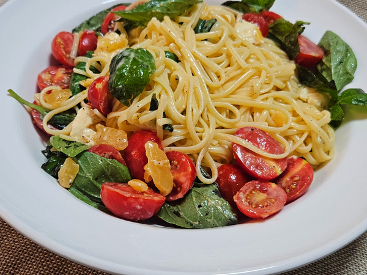

브리치즈 파스타 레시피

준비물
만드는 방법
- 파스타 면을 삶는다.
- 바질과 방울토마토를 씻고, 방울토마토는 반으로 잘라준다.
- 마늘은 기호에 맞게 다져준다.
- 브리치즈는 잘 녹을 수 있도록 겉부분을 잘라낸다.
- 방울토마토, 바질, 마늘, 치즈를 큰 볼에 넣고 면이 익을 때까지 기다린다.
- 면이 다 익었으면, 익은 파스타면을 재료들이 담긴 큰 볼에 넣는다.
- 면이 건조하지 않을 정도로 올리브 오일을 충분히 넣는다.
- 파스타 면의 열기에 의해 치즈가 녹기 때문에 열기가 사라지기 전에 치즈가 다 녹을 때까지 모든 재료들을 잘 섞어준다.
- 잘 섞인 파스타를 접시에 담는다.
- 완성!